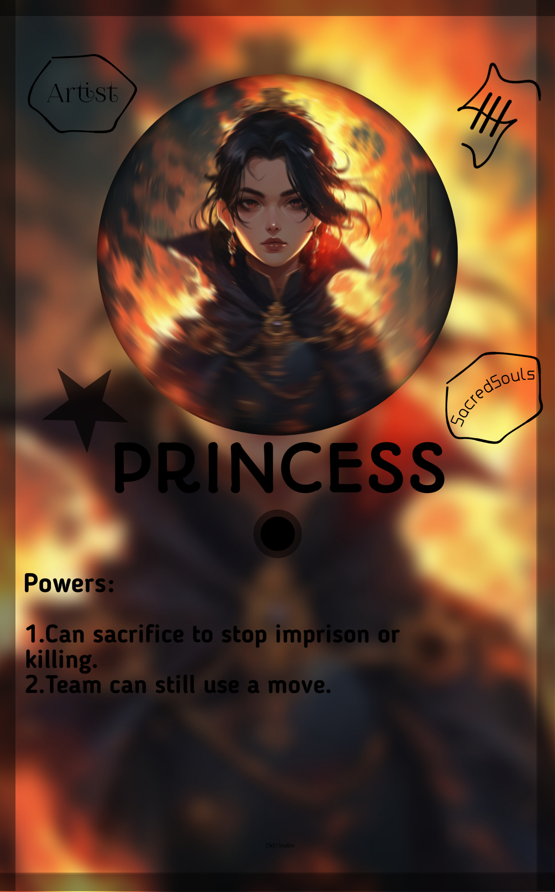
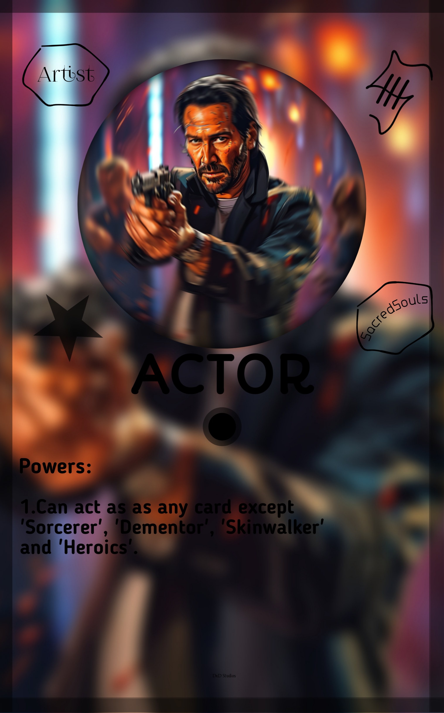
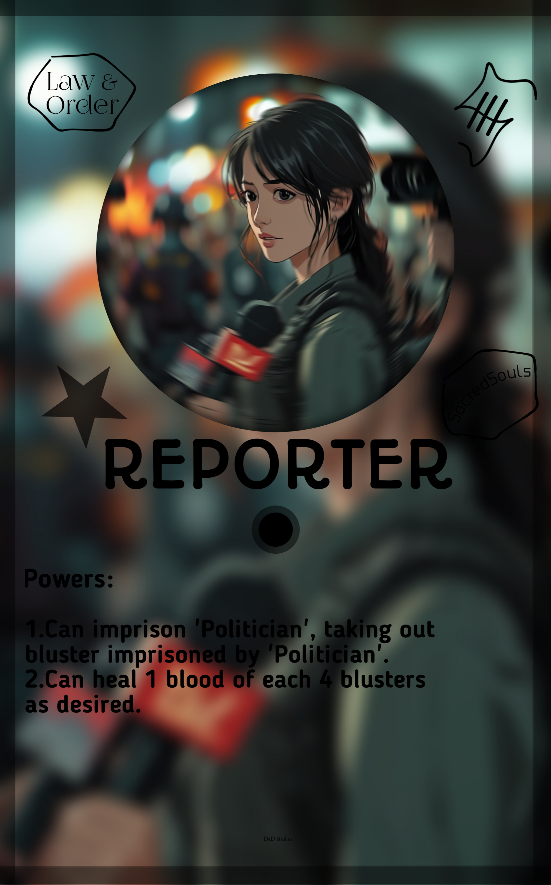
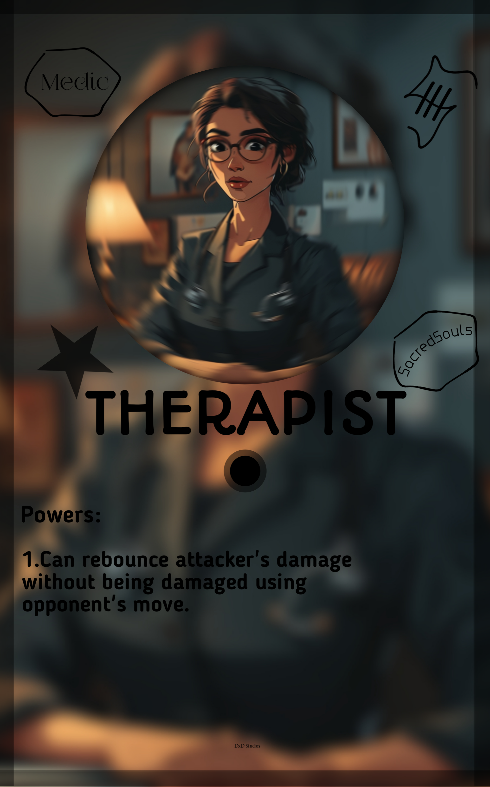

Discord
Discord
 Github
Github
.jpg) Twitter
Twitter
.png) Youtube
Youtube
 Instagram
Instagram
These blusters are mainly used to harm the opponent greatly by sacrificing itself. These can be used to kill, imprison, block or take blood from opponent.
The cards are:
PRINCESS

NAME: Princess Amelia of Arundel
ORIGIN: London, England
BIRTH: 03-12-1985
PROFESSION: Royalty
ENGAGEMENT COUNT: 32 Charitable Events
Princess Amelia of Arundel, born on March 12, 1985, in London, England, is a prominent member of the British royal family. She is celebrated for her extensive involvement in charitable activities and her role in promoting various humanitarian causes. With 32 significant charitable events to her name, Princess Amelia is known for her advocacy in areas such as education, health, and environmental sustainability. Her public engagements and philanthropic efforts have earned her widespread admiration and respect within and beyond the royal community.

ACTOR

NAME: Jonathan Blake
ORIGIN: Los Angeles, USA
BIRTH: 08-20-1976
PROFESSION: Actor
FILM COUNT: 176
Jonathan Blake is a renowned actor from Los Angeles, USA. Born on August 20, 1978, he has built a distinguished career in film and television. With 176 films to his credit, Blake is known for his versatility and compelling performances across various genres, from drama to action. His work has earned him critical acclaim and several awards, making him a prominent figure in the entertainment industry. His dedication to his craft and his ability to portray diverse characters have established him as one of the leading actors of his generation.
REPORTER

NAME: Laura Jennings
ORIGIN: New York City, USA
BIRTH: 02-15-1980
PROFESSION: Reporter
EXPOSURE COUNT: 178
Laura Jennings is an acclaimed investigative reporter from New York City, USA. Born on February 15, 1980, she is known for her incisive journalism and ability to uncover high-impact stories. With 178 major investigative reports to her credit, Jennings has earned a reputation for exposing corruption and bringing critical issues to light. She is highly regarded in the field of journalism and holds a prominent position among top investigative reporters. Her tenacity and commitment to uncovering the truth have earned her significant respect and numerous accolades in the industry.
THERAPIST

NAME: Dr. Emily Clarke
ORIGIN: San Francisco, USA
BIRTH: 09-12-1975
PROFESSION: Therapist
PATIENT COUNT: 3,487
Dr. Emily Clarke is a renowned therapist based in San Francisco, USA. Born on September 12, 1975, she is recognized for her exceptional skills in psychotherapy and counseling. With a patient count of 3,487, Dr. Clarke has extensive experience in treating a wide range of mental health issues, including anxiety, depression, and trauma. She is known for her compassionate approach and evidence-based therapeutic techniques. Holding a prominent position in the field of mental health, Dr. Clarke has earned widespread respect for her dedication to improving the well-being of her clients.
TERRORIST
NAME: Tariq Al-Mansoor
ORIGIN: Damascus, Syria
BIRTH: 10-25-1980
PROFESSION: Terrorist
ATTACK COUNT: 123
Tariq Al-Mansoor is a notorious terrorist from Damascus, Syria. Born on October 25, 1980, he is known for orchestrating numerous high-profile attacks globally. Al-Mansoor is a leading figure in the extremist group 'Jihad al-Fursan,' and is notorious for his strategic planning and execution of terrorist operations. With a record of 123 major attacks, he is considered a significant threat to international security. He holds a high position on the global most-wanted lists and is notorious for his ability to conduct large-scale, coordinated attacks with high precision.